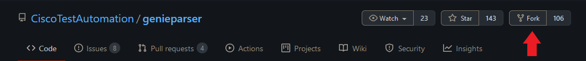
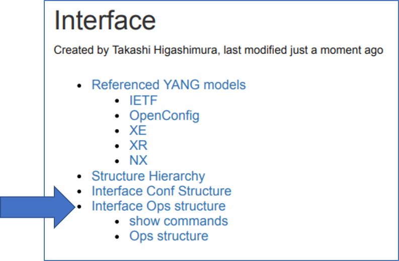
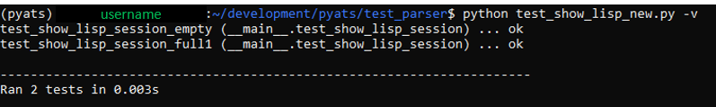

Write a parser
This topic describes why and how to write your own parsers to meet your network automation requirements.
Remember to share your new parser with the rest of the pyATS user community! Please see the topic Contribution guidelines for more information.
Heads up! This guide contains lots useful information and handy examples, which also means that there’s a lot to read before you can actually get to parts about coding a parser. If you want to skip the reading and just get right to the fun stuff, then by all means, skip ahead by clicking here. We get it, it’s cool. Just be sure to read the rest of this guide before contributing to the Genie parser repo. It will save you (and us) time in the end.
Tip
If you’re the kind of person who prefers to learn by video instead of reading about it, then please checkout these great videos about making pyATS parsers:
- How to write a Genie parser for Cisco! - uploaded by Juhi Mahajan
Juhi provides a good overview of parser creation process
- Creating a pyATS | Genie Parser from SCRATCH - uploaded by Data Knox
Data Knox gives a full hands-on parser writing guide from start to finish
1. What is a parser?
A parser converts device output into a Python dictionary, which stores the device data as a set of key-value pairs. This process harmonizes the data structure for different types of communication interfaces, including CLI, REST, NETCONF, and others.
The pyATS Library parsers create standardized output for commands, which means
that you can write and run reusable automation scripts. In the pyATS ecosystem,
parsers are typically written using the genie.metaparser module.
For a basic introduction to the pyATS Library parsers, see the topic Parse device output in the Get Started with pyATS guide (recommended).
For more information about the
metaparserpackage, see the topic Metaparser Package.
2. Why write a parser?
The pyATS Library provides you with many out-of-the box parsers for use with the most frequently-used Cisco show commands and OS/platform combinations.
But if you want to modify a parser, make a new parser, or if you need to parse output for a feature that does not yet have a pyATS Library model, you can easily write your own parser.
3. How the pyATS Library parsers work
A parser is composed of two Python classes:
Using these classes together results in output that is standardized and reliably structured. This is crucial for network automation scripts to work across different types of OS’s and communication protocols.
Later sections will describe this process in more detail and multiple examples will be provided.
4. Setting up your development environment
If this is your first time writing a pyATS parser or if you’re looking for an easy way to jump right into things, then start here. This section will outline how to easily set up a development environment that can be used for writing a parser.
Fork the https://github.com/CiscoTestAutomation/genieparser repo.
Create a python virtual environment, activate it, and install pyATS into it.
$ python -m venv <directory_of_your_choice> $ source <directory_of_your_choice>/bin/activate $ pip install pyats[full]
Once the installation has finished, clone your
genieparserrepo (replaceYOUR_USERNAMEwith your Gihub account username) and runmake developto get your environment ready to work in.$ git clone https://github.com/<YOUR_USERNAME>/genieparser $ cd genieparser $ make develop
At this point, you are now ready to start writing your parser, but if you’d
like to follow along with some of the examples in this guide, then
follow these next few steps to set up a mock network environment.
First, download the zip file and extract the contents
to a directory of your choice, such as mock_parser. It’s recommended
to use a seperate terminal for your mock network operations.
Go to the directory that contains the extracted files:
$ cd mock_parser $ python
In your Python interpreter, load the Testbed YAML file, and connect to a device.
from genie.testbed import load testbed = load('mock_parser.yaml') dev = testbed.devices['iosxe1'] dev.connect()
Note
Ignore the prompt to continue to connect.
Now that you have your development environment and mock network set up, it’s time to get programming!
5. Writing the Schema Class
A good schema is one of the most crucial (and in some cases, most challenging) aspects of creating a parser. It’s where you must examine the output from a device and determine what information is important and how that information should be structured. In pyATS, a schema is used to define all of the key-value pairs that will be stored in a Python dictionary. This dictionary is what will contain all of the output from our parser.
If you intend to contribute your parser to the pyATS project, then you must build and implement a schema class as it results in the following benefits:
Time-saving: You can quickly see the data structure without having to read hundreds of lines of regex output. This saves you time when troubleshooting.
Future-proof and robust: When you or others modify code, you’re less likely to break something.
Scalable: It’s more efficient to modify a schema than to have multiple developers working with just the regex output.
5.1 Creating a schema
This section covers the making of your own new schema.
To start creating a new schema, you’ll first need to gather device output. Once you have some, you can identify the keys that you’ll need in a number of ways, including:
show command output directly.show command to display the output as key-value pairs.Note
You can also create a schema based on an existing model
Tip
You can find more examples of schemas here
5.1.1 Identifying keys directy from show command output
Writing a schema based on device output can range from straightforward to surprisingly complex. Having multiple examples of device output for a given command can be incredibly helpful when designing a schema.
For example, the output from the show track command for IOSXE can look like
this:
Track 1
Interface GigabitEthernet3.420 line-protocol
Line protocol is Up
1 change, last change 00:00:27
Tracked by:
VRRP GigabitEthernet3.420 10
Or it can look like this:
Track 2
IP route 10.21.12.0 255.255.255.0 reachability
Reachability is Down (no ip route), delayed Up (1 sec remaining) (connected)
1 change, last change 00:00:24
Delay up 20 secs, down 10 secs
First-hop interface is unknown (was Ethernet1/0)
Tracked by:
HSRP Ethernet0/0 3
HSRP Ethernet0/1 3
Or even this:
Track 1
IP route 172.16.52.0 255.255.255.0 metric threshold
Metric threshold is Down (no route)
1 change, last change 00:00:35
Metric threshold down 255 up 254
Delay up 2 secs, down 1 sec
First-hop interface is unknown
Comparing these three outputs reveals a lot about the structure of the information given by that particular show command. Using these output examples, a schema that looks like this can be created:
class ShowTrackSchema(MetaParser):
""" Schema for 'show track' """
schema = {
'type': {
Any(): {
Optional('name'): str,
Optional('address'): str,
Optional('mask'): str,
'state': str,
Optional('state_description'): str,
Optional('delayed'): {
Optional('delayed_state'): str,
Optional('secs_remaining'): float,
Optional('connection_state'): str,
},
'change_count': int,
'last_change': str,
Optional('threshold_down'): int,
Optional('threshold_up'): int,
},
},
Optional('delay_up_secs'): float,
Optional('delay_down_secs'): float,
Optional('first_hop_interface_state'): str,
Optional('prev_first_hop_interface'): str,
Optional('tracked_by'): {
Optional(Any()): { #increasing index 0, 1, 2, 3, ...
Optional('name'): str,
Optional('interface'): str,
Optional('group_id'): str,
}
},
}
If you want to jump ahead and see what the parsed output is when using this schema, then click here. The file that contains the above ShowTrackSchema class can be found here.
In the above schema example, you can see the use of two schema subclasses; Any and Optional.
As you might expect, Any is used to match anything and is often used in larger
or more complicated schemas. Optional is used to indicate that a key may or
may not exist in the device output.
There are other helpful subclasses that can be used in the creation of your schema such as Default, And,
and Or. Visit the Schema Engine Documentation to read more about them and how to use them.
Generate mock device output
Follow the mock device example below to generate some sample device output for yourself, examine output indentation behaviour, see how you might want to group data into containers, and use the Python’s pretty print module.
Get some device out put by executing the
show interfacescommand in your mock exmaple.dev.execute('show interfaces')
Result: The system displays the unparsed output. The following example shows some of the output that you can use to identify keys for your parser:
GigabitEthernet1 is up, line protocol is up Hardware is CSR vNIC, address is 0800.2729.3800 (bia 0800.2729.3800) Internet address is 10.0.2.15/24 MTU 1500 bytes, BW 1000000 Kbit/sec, DLY 10 usec, reliability 255/255, txload 1/255, rxload 1/255 Encapsulation ARPA, loopback not set Keepalive set (10 sec) Full Duplex, 1000Mbps, link type is auto, media type is Virtual output flow-control is unsupported, input flow-control is unsupported ARP type: ARPA, ARP Timeout 04:00:00 Last input 00:00:00, output 00:00:00, output hang never Last clearing of "show interface" counters never ... ...
Check the indentation in the output. The indentation tells you about the parent-child relationship of the keys.
Note
Remember to use the indentation (parent-child relationships) to ensure that values don’t overwrite other values at the same level. In the following example, the keys for interface_name are indented so that the mac_address value for Interface1 won’t be overwritten by the mac_address value for Interface2.
Your schema might begin with the following lines:
'interfaces': { Any(): { # GigabitEthernet1 'oper_status': str, # up 'line_protocol': str, # up 'hardware': str, # CSR vNIC 'mac_address': str, # 0800.2729.3800 ... ...
You can also check for ways to group the data based on counters, input and output, as well as other statistics. For the following output:
4243 packets input, 361948 bytes, 0 no buffer Received 0 broadcasts (0 IP multicasts) 0 runts, 0 giants, 0 throttles 0 input errors, 0 CRC, 0 frame, 0 overrun, 0 ignored 0 watchdog, 0 multicast, 0 pause input 3616 packets output, 1637917 bytes, 0 underruns 0 output errors, 0 collisions, 0 interface resets 0 unknown protocol drops 0 babbles, 0 late collision, 0 deferred 0 lost carrier, 0 no carrier, 0 pause output 0 output buffer failures, 0 output buffers swapped out
Your schema could be:
'counters': { # categorize the value as 'counters' 'input': { # categorize the 'input' related values 'packets': int, 'bytes': int, }, 'output': { 'packets': int, 'bytes': int, }
To see the output with a more readable structure, you can use Python’s “pretty-print” module:
output = dev.parse('show interfaces') import pprint pprint.pprint(output)
Result: The following snippet shows the output formatted so that it’s easier to read:
{'GigabitEthernet1': {'arp_timeout': '04:00:00', 'arp_type': 'arpa', 'auto_negotiate': True, 'bandwidth': 1000000, 'counters': {'in_broadcast_pkts': 0, 'in_crc_errors': 0, 'in_errors': 0, 'in_frame': 0,
5.1.2 Identifying keys from XML output
NXOS device show commands have an XML option that formats the output as key-value pairs. If you have an IOSXE or IOSXR device, you can usually find a similar NXOS command to run so that you can see the XML output:
nx-osv9000-1# show interface | xml
Result:
<?xml version="1.0" encoding="ISO-8859-1"?>
<nf:rpc-reply xmlns="http://www.cisco.com/nxos:1.0:if_manager" xmlns:nf="urn:iet
f:params:xml:ns:netconf:base:1.0">
<nf:data>
<show>
<interface>
<__XML__OPT_Cmd_show_interface_quick>
<__XML__OPT_Cmd_show_interface___readonly__>
<__readonly__>
<TABLE_interface>
<ROW_interface>
<interface>mgmt0</interface>
<state>up</state>
<admin_state>up</admin_state>
<eth_hw_desc>Ethernet</eth_hw_desc>
<eth_hw_addr>5e01.c005.0000</eth_hw_addr>
<eth_bia_addr>5e01.c005.0000</eth_bia_addr>
<eth_ip_addr>10.0.0.0</eth_ip_addr>
In this example, your schema could include the keys state, admin_state, eth_hw_desc, and others.
5.1.3 Identifying keys from the YANG data model
Install the
pyangpackage in your virtual environment:pip install pyang
Clone the git repository for the YANG model:
git clone https://github.com/YangModels/yang.git
Look for the latest model. (At the time of writing, this is
./yang/experimental/ietf-extracted-YANG-modules/ietf-arp@2019-11-04.yang):find . | grep ietf-arp
View the model and identify the keys:
pyang -f tree ./yang/experimental/ietf-extracted-YANG-modules/ietf-arp@2019-11-04.yang
Result: You can see the YANG model with the keys and data types:
module: ietf-arp +--rw arp +--rw dynamic-learning? boolean augment /if:interfaces/if:interface/ip:ipv4: +--rw arp +--rw expiry-time? uint32 +--rw dynamic-learning? boolean +--rw proxy-arp | +--rw mode? enumeration +--rw gratuitous-arp | +--rw enable? boolean | +--rw interval? uint32 +--ro statistics +--ro in-requests-pkts? yang:counter32 +--ro in-replies-pkts? yang:counter32 +--ro in-gratuitous-pkts? yang:counter32 +--ro out-requests-pkts? yang:counter32 +--ro out-replies-pkts? yang:counter32 +--ro out-gratuitous-pkts? yang:counter32 augment /if:interfaces/if:interface/ip:ipv4/ip:neighbor: +--ro remaining-expiry-time? uint32
5.2 Creating a schema based on an existing model
Check Genie Model to check if the parser feature you are working on has a Model: Genie Models
Check the Model Ops structure Create the Parser Schema to be as close as possible to the Genie Model Ops Structure
If you want to create a new schema, you can base it on the keys for an existing feature.
In a web browser, go to the list of models on which you can base a new parser schema.
For this example, select interface, and then select MODEL to open a PDF file that contains the interface model.
Navigate to the Interface Ops structure section.

Result: The ops structure lists the keys that you can use to create your own parser schema.In a text editor, define the schema class, and then add the keys that you want your parser to return, as shown in the following example of part of a schema definition. Use JSON format and save the file as a *.py file.
class ShowInterfacesSchema(MetaParser): """schema for show interfaces show interfaces <interface>""" schema = { Any(): { 'oper_status': str, Optional('line_protocol'): str, 'enabled': bool, Optional('connected'): bool, Optional('description'): str, 'type': str,
Note
You must specify the value type, such as integer, float, string, boolean, or list.
You can see the complete parser file on GitHub.
{kind=link}
5.3 Explore other pyATS schemas
If you want to do some exploration of existing schemas, or if you want to see more schema examples to help with the creation of your own, then go check out all of the available parsers on the Parsers List website!
At the top of the page, search for a show command, such as show interfaces.
Select an OS, in this example, IOSXE.
Select show interfaces, and then scroll down to the IOSXE schema. The following illustration shows part of the schema.
{kind=link}
6. Writing the Parser Class
The pyATS Library parsers look for specific patterns in the device output and then structure the output as a set of key-value pairs. When you write a parser, you specify the patterns that you want the parser to match. For example, the show interfaces parser looks for patterns and returns the information as a set of key-value pairs, as shown in the following example of a section of parsed output:
{
"GigabitEthernet1": {
"arp_timeout": "04:00:00",
"arp_type": "arpa",
"auto_negotiate": true,
"bandwidth": 1000000,
There are two main ways to write the parser class:
Most of the parsers in the pyATS parser library are written using regular expressions. It’s a little more work to write regexes for each piece of data, but it offers excellent control for pattern matching and for assigning the right values to the right keys in the right way.
The pyATS Library parsers use regular expressions (regex) to match patterns in the device output. Regexes are the backbone of all parsers, so you must know how to use them before you can write a parser.
The following references provide detailed information about how to use regular expressions:
The following online tools can help you build and test Python regular expressions:
Note
The pyATS Library standard parsers use regular expressions for scalability. You can, however, write a parser that uses any of the following tools:
6.1 Writing a parser class with RegEx
When you write a new parser class, you can define the regular expressions used to match patterns in the device output. The parser adds the matched patterns as key-value pairs to a Python dictionary. The parser class inherits from the schema class to ensure that the resulting Python dictionary exactly follows the format of the defined schema.
The following example shows a schema and parser class for the show lisp session command. As you can see, the schema and parser classes are defined in the same Python file. Take a look at the example, and then we’ll explain how it works.
# Metaparser
from genie.metaparser import MetaParser
from genie.metaparser.util.schemaengine import Any, Or, Optional
# ==============================
# Schema for 'show lisp session'
# ==============================
class ShowLispSessionSchema(MetaParser):
''' Schema for "show lisp session" '''
# These are the key-value pairs to add to the parsed dictionary
schema = {
'vrf': {
Any(): {
'sessions': {
'total': int,
'established': int,
'peers': {
Any(): {
'state': str,
'time': str,
'total_in': int,
'total_out': int,
Optional('users'): int,
}
}
}
}
}
}
# Python (this imports the Python re module for RegEx)
import re
# ==============================
# Parser for 'show lisp session'
# ==============================
# The parser class inherits from the schema class
class ShowLispSession(ShowLispSessionSchema):
''' Parser for "show lisp session"'''
cli_command = 'show lisp session'
# Defines a function to run the cli_command
def cli(self, output=None):
if output is None:
out = self.device.execute(self.cli_command)
else:
out = output
# Initializes the Python dictionary variable
parsed_dict = {}
# Defines the regex for the first line of device output, which is:
# Sessions for VRF default, total: 3, established: 3
p1 = re.compile(r'Sessions +for +VRF +(?P<vrf>(\S+)),'
' +total: +(?P<total>(\d+)),'
' +established: +(?P<established>(\d+))$')
# Defines the regex for the next line of device output, which is:
# Peer State Up/Down In/Out Users
# 2.2.2.2 Up 00:51:38 8/13 3
p2 = re.compile(r'(?P<peer>(\S+)) +(?P<state>(Up|Down)) +(?P<time>(\S+))'
' +(?P<in>(\d+))\/(?P<out>(\d+)) +(?P<users>(\d+))$')
# Defines the "for" loop, to pattern match each line of output
for line in out.splitlines():
line = line.strip()
# Processes the matched patterns for the first line of output
# Sessions for VRF default, total: 3, established: 3
m = p1.match(line)
if m:
group = m.groupdict()
vrf = group['vrf']
vrf_dict = parsed_dict.setdefault('vrf', {}).\
setdefault(vrf, {}).setdefault('sessions', {})
vrf_dict['total'] = int(group['total'])
vrf_dict['established'] = int(group['established'])
continue
# Processes the matched patterns for the second line of output
# Peer State Up/Down In/Out Users
# 2.2.2.2 Up 00:51:38 8/13 3
m = p2.match(line)
if m:
group = m.groupdict()
peer = group['peer']
peer_dict = vrf_dict.setdefault('peers', {}).setdefault(peer, {})
peer_dict['state'] = group['state'].lower()
peer_dict['time'] = group['time']
peer_dict['total_in'] = int(group['in'])
peer_dict['total_out'] = int(group['out'])
peer_dict['users'] = int(group['users'])
continue
return parsed_dict
The following table describes the structure of the parser class in more detail.
Line |
Description |
|---|---|
class ShowLispSession(ShowLispSessionSchema): |
Defines the parser class and the schema class from which it inherits. |
cli_command = ‘show lisp session’ |
Tells the parser to run a specific show command or commands. The value of command would be string or list. |
def cli(self, output=None): |
This is a Python function that tells the parser to execute the |
parsed_dict = {} |
Initializes the parsed and structured output in the Python dictionary object named |
p1 = re.compile… |
Defines the regex for each line of device output. In this example of router output, each line of output has unique values, but the pattern of each line repeats for every vrf. For example:
For
|
for line in out.splitlines(): |
Tells the parser to “loop” over each line of the device output and test each line against the regex pattern. splitlines breaks the output into individual lines. strip removes leading and trailing spaces before and after the matched pattern. |
m = p1.match(line) |
Creates an object |
if m: (and the code that follows) |
If a line matches the regex pattern, tells the parser to create the key-value pairs defined in the schema. The code that follows creates objects to store values that match the structure defined by the schema. |
return parsed_dict |
After the loop exhausts (reaches the last line), this ends the execution of the parser and returns the parsed output as a Python dictionary. |
For consistency and compatibility when an interface name is parsed in its shortened form it should be converted to a standard format. The easiest way to accomplish this is with use of the Common library, found in /genie/parser/utils/common.py.
# take the example of a Ten Gigabit Ethernet port. When parsed out it may look like this:
>>> interface_name = "Te0/0/1"
# for consistency and compatibility we want to convert this to be a standardized name.
>>> from genie.libs.parser.utils.common import Common
>>> interface_name
'Te0/0/1'
>>> converted_name = Common.convert_intf_name(interface_name)
>>> converted_name
'TenGigabitEthernet0/0/1'
Note
You need to know the patterns that you want to match before you write the parser class. These patterns can be some or all of the keys defined in the schema class.
6.2 Writing a parser class with the parsergen package
The pyATS Library parsergen package provides a one-step parsing mechanism that can parse dynamic tabular and non-tabular device output. The parsergen produces significantly fewer lines of code than standard parsing mechanisms.
The parsergen package is a generic parser for show commands. You can use the package to create a parser class for any given show command, and then reuse your new class to create tests for the output values.
Using parsergen to create a parser class is particularly useful when you don’t have a pyATS Library model for a feature. In this example, we’ll create a new parser class for the VXLAN related parser.
In a Python interpreter, import the required pyATS Library and Python functionality (
reis the Python regex functionality):import re from pprint import pprint from genie.testbed import load from genie import parsergen
Load the testbed, create the device object, and connect to the device:
testbed = load('mock_parser.yaml') dev = testbed.devices['iosxe1'] dev.connect()
Execute the show command and store the output in the variable
output:output = dev.execute('show nve vni')
Result: You can see the tabular output:
Interface VNI Multicast-group VNI state Mode BD cfg vrf nve1 6010 N/A Up L2DP 1 CLI N/A nve2 6020 N/A Up L2DP 2 CLI N/A nve3 6030 N/A Up L2DP 3 CLI N/A
Define a variable
headerthat contains the list of header names from the table. The names must exactly match the output:header = ['Interface', 'VNI', 'Multicast-group', 'VNI state', 'Mode', 'BD', 'cfg', 'vrf']
Use
parsergento parse the output, where index 0 is the Interface column header. This process creates a Python dictionary of operational statistics per interface:result = parsergen.oper_fill_tabular(device_output=output, device_os='iosxe', header_fields=header, index=[0])
Print the value of the
resultobject that contains the dictionary:pprint(result.entries)
Result: Easy-to-read and easy-to-automate structured data:
{'nve1': {'BD': '1', 'Interface': 'nve1', 'Mode': 'L2DP', 'Multicast-group': 'N/A', 'VNI': '6010', 'VNI state': 'Up', 'cfg': 'CLI', 'vrf': 'N/A'}, 'nve2': {'BD': '2', 'Interface': 'nve2', 'Mode': 'L2DP', 'Multicast-group': 'N/A', 'VNI': '6020', 'VNI state': 'Up', 'cfg': 'CLI', 'vrf': 'N/A'}, 'nve3': {'BD': '3', 'Interface': 'nve3', 'Mode': 'L2DP', 'Multicast-group': 'N/A', 'VNI': '6030', 'VNI state': 'Up', 'cfg': 'CLI', 'vrf': 'N/A'}}
Tip
You can run all of these commands as a script. Download the attached zip file, extract the file to a directory of your choice, cd to that directory, and then run the following command:
(pyats) $ python parsergen_script.py
7. Testing your parser
Now that you’ve finished writing your parser, the time has come to test it!
There are currently two types of tests, those being Folder Based and Unittest Based. The testing strategy is currently in a state of transition. Moving to folder based testing helps us avoid merge conflicts and duplicate boilerplate code while ensuring tests are faster and easier create and use. When creating tests for a new parser do so in the Folder Based style.
Folder based testing is currently completed for:
ASA
IOS
IOSXE
IOSXR
JUNOS
All other OS’s are in transition from unittest based testing.
Important
If you want to contribute your new parser to the open-source pyATS feature libraries and components, you must attach Folder Based testing results for each parser that you want to contribute.
Make JSON
Before we can run any tests, we need to incorporate your new parser into the pyATS
genie.libs.parser package using the make json command.
The make json command makes it easy to let pyATS know about how to use your new parser. Simply navigate to the root directory of the genieparser repo and execute make json.
.../genieparser$ make json
make json will then create/update a json file which will link commands to their related class. This json file will be used when device.parse is executed in order to find the correct parser class based on the given command.
Attention
Remember to execute make json every time you create a new parser!
Without make json, device.parse will not be able to find the parser class
and you’ll end up with a Could not find parser error when trying to test
your parser.
Try your parser on a real device
If possible, it is recommended to run your parser on a real device to make sure that you get the expected parsed output. The following example shows how to do this in pure Python:
from genie.testbed import load
tb = load('yourtestbed.yaml')
dev = tb.devices['uut']
dev.connect()
parsed_output = dev.parse('show inventory')
7.1 Folder based testing (ASA, IOS, and IOSXE)
To create a folder based test with cli based output, follow these simple tests.
Create a folder in the tests directory named exactly the same as the class name in the respective folder.
As an example, the code class ShowClock(ShowClockSchema) would point you to creating a folder called ShowClock.
The tests directory is a OS specific folder such as src/genie/libs/parser/iosxe/tests/.
Create a folder within the class name directory called cli.
e.g. src/genie/libs/parser/iosxe/tests/ShowClock/cli.
Create folders for empty and equal within the cli folder.
e.g. src/genie/libs/parser/iosxe/tests/ShowClock/cli/empty.
e.g. src/genie/libs/parser/iosxe/tests/ShowClock/cli/equal.
Within the empty folder create a file that ends with _output.txt
e.g. src/genie/libs/parser/iosxe/tests/ShowClock/cli/empty/empty_output.txt.
This file should be either empty or partial output that will not raise a SchemaEmptyParserError error.
Within the equal folder create the raw output, expected value, and potential arguments.
The files are grouped together by stripping _output.txt, _expected.py, and _arguments.json and comparing the names that match.
As an example golden_output1_arguments.json, golden_output1_expected.py, and golden_output1_output.txt are understood to be part of the same test.
The output file, should be a simple txt file with the expected output.
The expected Python file, should be a Python file with a single variable called expected_output that has the expected data structure.
The arguments JSON file, should be a single dictionary that is a set of key/value pairs.
Repeat this process for as many tests outputs you would like to verify, meaning you are not limited to a single test per command. This is helpful when output may be different based on any number of conditions.
Following that process, you should end up with a folder structure that looks similar to:
ShowClock
└── cli
├── empty
│ └── empty_output_output.txt
└── equal
├── golden_output_expected.py
└── golden_output_output.txt
4 directories, 3 files
Ideally, this entire process once known, should only take a few seconds to create files and a few minutes to populate those files. For testing purposes you can run the tests locally. You can either run all tests, run a single OS tests, or run a single command tests for a single OS, as shown below from within the tests folder.
.../genieparser/tests$ python folder_parsing_job.py
.../genieparser/tests$ python folder_parsing_job.py -o iosxe
.../genieparser/tests$ python folder_parsing_job.py -o iosxe -c ShowClock
The output will show you the something similar, which will provide the PASSED and FAILED results.
.../genieparser/tests$ python folder_parsing_job.py -o iosxe -c ShowClock
<cut for brevity>
2020-09-19T16:14:17: %AETEST-INFO: | Detailed Results |
2020-09-19T16:14:17: %AETEST-INFO: +------------------------------------------------------------------------------+
2020-09-19T16:14:17: %AETEST-INFO: SECTIONS/TESTCASES RESULT
2020-09-19T16:14:17: %AETEST-INFO: --------------------------------------------------------------------------------
2020-09-19T16:14:17: %AETEST-INFO: .
2020-09-19T16:14:17: %AETEST-INFO: `-- FileBasedTest PASSED
2020-09-19T16:14:17: %AETEST-INFO: `-- check_os_folder[operating_system=iosxe] PASSED
2020-09-19T16:14:17: %AETEST-INFO: |-- Step 1: iosxe -> ShowClock PASSED
2020-09-19T16:14:17: %AETEST-INFO: |-- Step 1.1: Test Golden -> iosxe -> ShowClock PASSED
2020-09-19T16:14:17: %AETEST-INFO: |-- Step 1.1.1: Gold -> iosxe -> ShowClock -> golden_output PASSED
2020-09-19T16:14:17: %AETEST-INFO: |-- Step 1.2: Test Empty -> iosxe -> ShowClock PASSED
2020-09-19T16:14:17: %AETEST-INFO: `-- Step 1.2.1: Empty -> iosxe -> ShowClock -> empty_output PASSED
2020-09-19T16:14:17: %AETEST-INFO: +------------------------------------------------------------------------------+
2020-09-19T16:14:17: %AETEST-INFO: | Summary |
2020-09-19T16:14:17: %AETEST-INFO: +------------------------------------------------------------------------------+
2020-09-19T16:14:17: %AETEST-INFO: Number of ABORTED 0
2020-09-19T16:14:17: %AETEST-INFO: Number of BLOCKED 0
2020-09-19T16:14:17: %AETEST-INFO: Number of ERRORED 0
2020-09-19T16:14:17: %AETEST-INFO: Number of FAILED 0
2020-09-19T16:14:17: %AETEST-INFO: Number of PASSED 1
2020-09-19T16:14:17: %AETEST-INFO: Number of PASSX 0
2020-09-19T16:14:17: %AETEST-INFO: Number of SKIPPED 0
2020-09-19T16:14:17: %AETEST-INFO: Total Number 1
2020-09-19T16:14:17: %AETEST-INFO: Success Rate 100.0%
2020-09-19T16:14:17: %AETEST-INFO: --------------------------------------------------------------------------------
root@197979f5dbd6:/genieparser/tests$
Golden output example files
In section 5.1.1, there are examples of the output from the show track
command for IOSXE. Below is what the parsed output from one of those
examples looks like. You can explore these test files yourself by
clicking here.
So, given this device output in golden_output1_output.txt,
Track 2
IP route 10.21.12.0 255.255.255.0 reachability
Reachability is Down (no ip route), delayed Up (1 sec remaining) (connected)
1 change, last change 00:00:24
Delay up 20 secs, down 10 secs
First-hop interface is unknown (was Ethernet1/0)
Tracked by:
HSRP Ethernet0/0 3
HSRP Ethernet0/1 3
the expected output from the parser in golden_output1_expected.py would be:
expected_output = {
'type': {
'IP route': {
'address': '10.21.12.0',
'mask': '255.255.255.0',
'state': 'Down',
'state_description': 'no ip route',
'delayed': {
'delayed_state': 'Up',
'secs_remaining': 1.0,
'connection_state': 'connected',
},
'change_count': 1,
'last_change': '00:00:24',
}
},
'delay_up_secs': 20.0,
'delay_down_secs': 10.0,
'first_hop_interface_state': 'unknown',
'prev_first_hop_interface': 'Ethernet1/0',
'tracked_by': {
1: {
'name': 'HSRP',
'interface': 'Ethernet0/0',
'group_id': '3'
},
2: {
'name': 'HSRP',
'interface': 'Ethernet0/1',
'group_id': '3'
}
}
}
7.2 Unittest based testing
The old testing strategy leverages unittest. The Python unittest.mock library returns mock device output. Use your parser class to parse the mock data and return a Python dictionary that contains the results.
The following example shows how to create a unit test file for the show lisp session example.
# Import the Python mock functionality
import unittest
from unittest.mock import Mock
# pyATS
from pyats.topology import Device
from pyats.topology import loader
# Metaparser
from genie.metaparser.util.exceptions import SchemaEmptyParserError, SchemaMissingKeyError
# iosxe show_lisp
from genie.libs.parser.iosxe.show_lisp import ShowLispSession
# =================================
# Unit test for 'show lisp session'
# =================================
class test_show_lisp_session(unittest.TestCase):
'''Unit test for "show lisp session"'''
empty_output = {'execute.return_value': ''}
# Specify the expected result for the parsed output
golden_parsed_output1 = {
'vrf':
{'default':
{'sessions':
{'established': 3,
'peers':
{'2.2.2.2':
{'state': 'up',
'time': '00:51:38',
'total_in': 8,
'total_out': 13,
'users': 3},
'6.6.6.6':
{'state': 'up',
'time': '00:51:53',
'total_in': 3,
'total_out': 10,
'users': 1},
'8.8.8.8':
{'state': 'up',
'time': '00:52:15',
'total_in': 8,
'total_out': 13,
'users': 3}},
'total': 3},
},
},
}
# Specify the expected unparsed output
golden_output1 = {'execute.return_value': '''
204-MSMR#show lisp session
Sessions for VRF default, total: 3, established: 3
Peer State Up/Down In/Out Users
2.2.2.2 Up 00:51:38 8/13 3
6.6.6.6 Up 00:51:53 3/10 1
8.8.8.8 Up 00:52:15 8/13 3
'''}
def test_show_lisp_session_full1(self):
self.maxDiff = None
self.device = Mock(**self.golden_output1)
obj = ShowLispSessionNew(device=self.device)
parsed_output = obj.parse()
self.assertEqual(parsed_output, self.golden_parsed_output1)
def test_show_lisp_session_empty(self):
self.maxDiff = None
self.device = Mock(**self.empty_output)
obj = ShowLispSessionNew(device=self.device)
with self.assertRaises(SchemaEmptyParserError):
parsed_output = obj.parse()
if __name__ == '__main__':
unittest.main()
To create your own unit test, complete the following steps.
Make sure to save your parser file in the directory for the device OS:
/genie/libs/parser/iosxe/show_lisp.py
The idea where adding your parser is, if show command is
show lisp <something>, add to show_lisp.py. So that we can easily find the parser code based on file name.Open a new text file, and save it in the tests folder for the OS.
In this new file, import the functionality shown in the example. Also, import your new parser class. In this example, show_lisp is the parser file and ShowLispSessionNew is the new parser class:
import unittest from unittest.mock import Mock from ats.topology import Device from ats.topology import loader from genie.metaparser.util.exceptions import SchemaEmptyParserError, SchemaMissingKeyError from genie.libs.parser.iosxe.show_lisp import ShowLispSession
Define the expected parsed and unparsed output. We refer to this as the “golden” output.
Define the tests as shown in the example, and use your new parser class name for the
objvariable.Execute the tests:
python test_show_lisp.py -v
Result:
After you push your parser code to your branch, GitHub Actions will check it on your pull request. Please make sure your parser testing passes.
Attention
Test on real devices whenever possible. If you use the Python mock functionality, make sure the expected output is from a real device.
8. Contributing your work to the pyATS project
You’ve written your parser, you’ve run tests on your parser, and you’re ready to contribute your parser. Great! For your convenience, the steps required to make a good pull request are outlined here, but before you start them, go read the pyATS contribution guide. Seriously. It’s good stuff. Please follow the steps closely as it saves time for you and also for our development team! The genieparser repo README also contains useful information on submitting your parser.
Make sure your testing passed via GitHub Actions.
Fix any errors found in GitHub Actions result.
Create a new changelog file in
genieparser/changelog/undistributed/. The genieparser repo README explains how in the how to write changelog section.Commit and push your changes to your forked genieparser repo.
Create a pull request
Fill out the Description, Motivation and Context, Impact, and Screenshots sections of the pull request form.
Complete the Checklist section.
Submit your pull request!
See also…